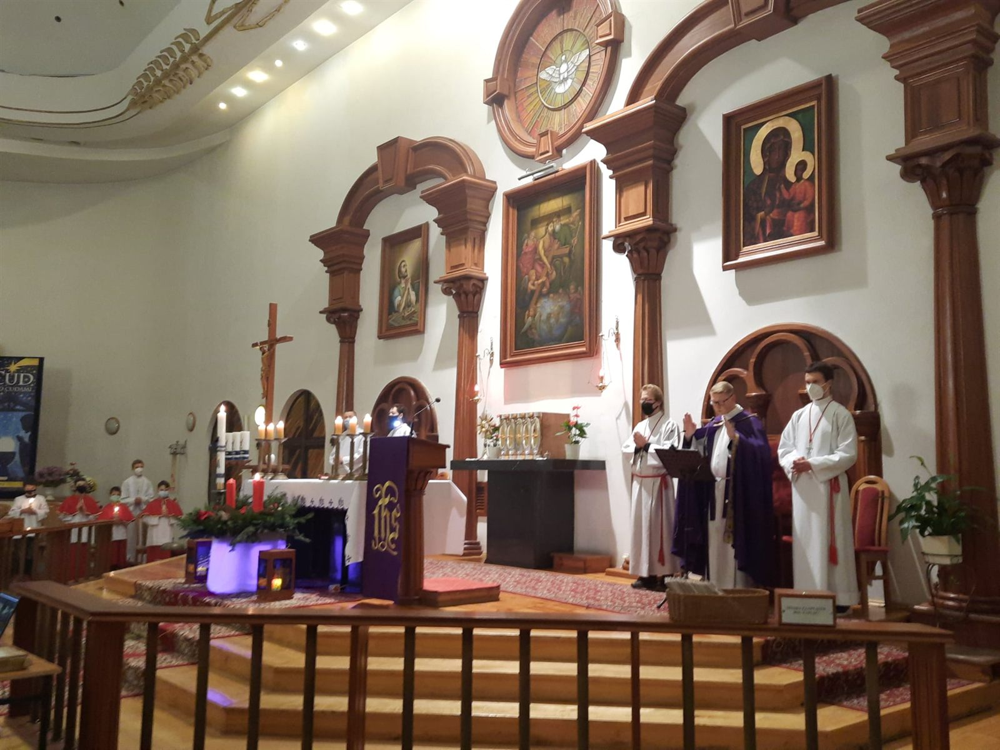
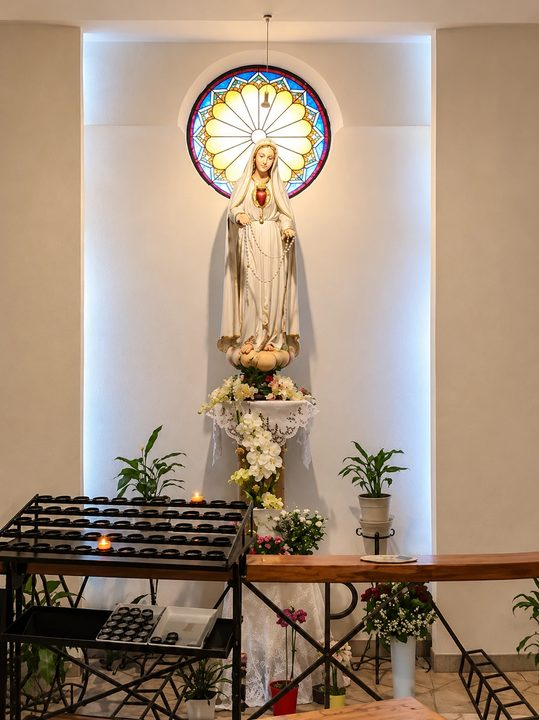
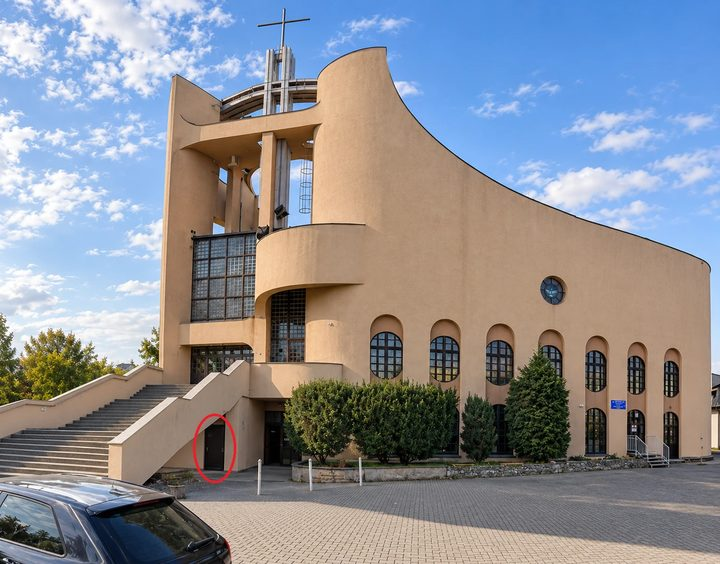

Pierwotny kościół pw. Świętej Trójcy, znajdujący się we wrocławskiej dzielnicy Krzyki, wzniesiono w latach 1937–1945. Podczas działań wojennych świątynia została zburzona, a ruiny całkowicie rozebrano.
Parafia została erygowana w 1960 r., jednak dopiero z inicjatywy ks. prał. Jana Czaplińskiego w 1979 r. ruszyły prace nad budową nowego kościoła, którego autorem projektu był architekt Wacław Kamocki. Autor zakładał budowę kościoła dwupoziomowego oraz obiektów sąsiadujących – plebanii i domu parafialnego. W wieżę kościoła wkomponowano potrójny krzyż oraz trzy elementy architektoniczne, mające podkreślać symbolikę Trójcy Świętej.
Architektura świątyni
Kościół ma nowoczesną, niebanalną bryłę. Nawa główna nakryta jest sklepieniem kolebkowym. W ścianie południowej zamontowano sześć okien rozświetlających wnętrze. Rzut poziomy górnej kondygnacji świątyni ma kształt rombu, a jej nawa główna z obu stron jest wykończona antresolami. Elipsoidalna kopuła wsparta na czterech kolumnach posadowionych o ponad metr od ścian budynku, wykonana jest z żelbetonu i zwieńczona złoconą rozetą.

Wnętrze
Nietypowa bryła kościoła przekłada się na oryginalne w swej budowie wnętrze świątyni. Wystrój ołtarza głównego to połączenie mahoniowego drewna z wkomponowanymi w nie obrazami przedstawiającymi Trójcę Świętą, św. Józefa oraz Matkę Bożą Częstochowską. Nad malowidłami umieszczono rozetę ukazującą Ducha Świętego. Po przeciwległej stronie można podziwiać dzieła ilustrujące św. Kingę, św. Jadwigę i bł. Czesława. Wystrój prezbiterium zaprojektował ks. Czesław Mazur, a witraże wykonała Anna Lamparska.
Podczas Kongresu Eucharystycznego w 1997 r. przybyły z Rzymu abp Zenon Grocholewski dokonał uroczystej konsekracji kościoła.
Staraniem obecnego proboszcza ks. kan. Andrzeja Szyca zamontowano w kościele windę dla osób niepełnosprawnych, przebudowano schody główne, urządzono Kaplicę Miłosierdzia oraz Kaplicę Fatimską.

